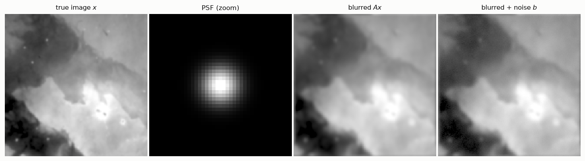
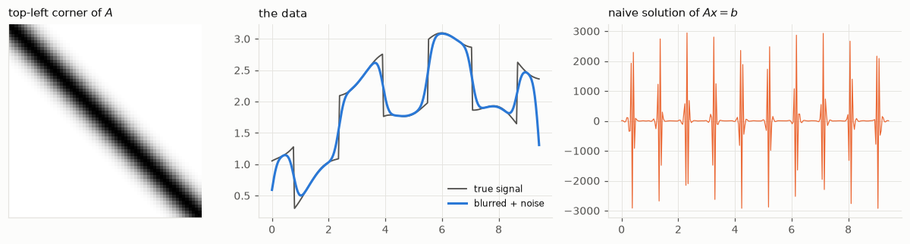
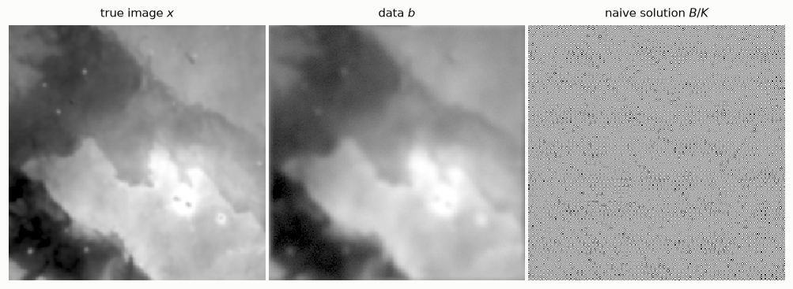
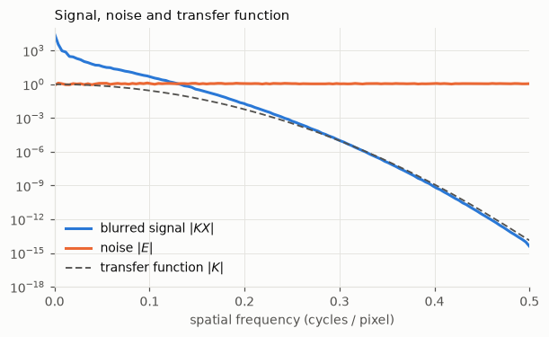
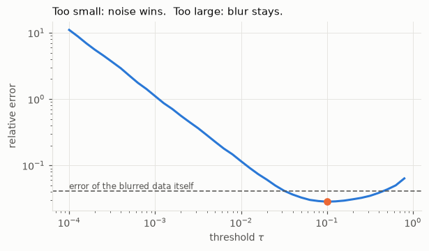
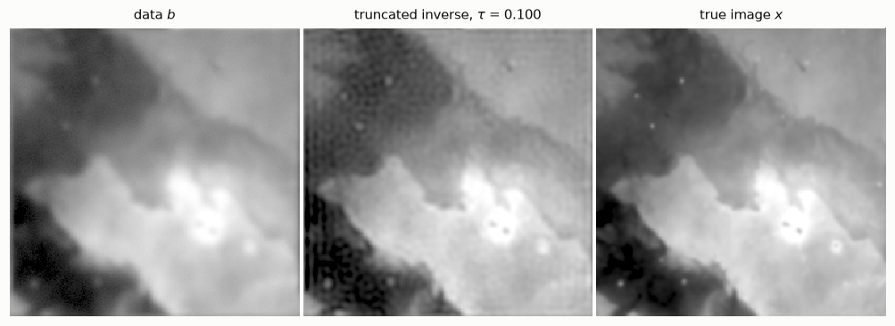
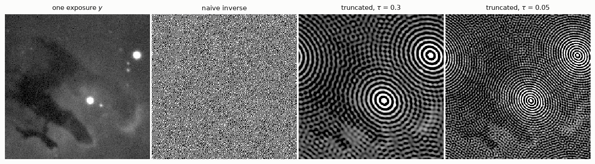

import numpy as np
from numpy.fft import fft2, ifft2
import matplotlib.pyplot as plt
import hnotools as hno
hno.style()
rng = np.random.default_rng(0) # fixed seed: your figures match ours1 The image deblurring problem
Companion notebook to Hansen, Nagy & O’Leary, Deblurring Images: Matrices, Spectra, and Filtering (SIAM, 2006), chapter 1. Read the chapter first; this notebook lets you run the ideas in Python, and ends on our own telescope data. The one-dimensional example is taken from H. Talbot’s lecture notes on optimisation.
What you will take away
- Blurring is a linear operation: \(b = A\,x + e\).
- For a spatially invariant blur with periodic boundaries, \(A\) is diagonal in the Fourier basis, so applying it and inverting it cost one FFT each.
- The obvious solution \(x = A^{-1} b\) is useless: it amplifies noise without bound. This is what “ill-posed” means in practice.
- A usable solution must give up some frequencies. Choosing which ones is regularisation, the subject of the whole book.
Notation. The book writes \(x\) for the sharp image, \(b\) for the blurred one, \(e\) for the noise and \(A\) for the blurring matrix. Our project notes write \(y = k * x + n\): same thing, with \(b \leftrightarrow y\), \(e \leftrightarrow n\), and \(A\) = “convolve with the PSF \(k\)”. Capital letters (\(X\), \(B\), \(K\)) are Fourier transforms.
1.1 A sharp image, a PSF, a blurred image
Our “true sky” \(x\) is a piece of the Pillars of Creation seen by the Hubble Space Telescope (oxygen filter). We blur it ourselves, so that for once we know the answer and can measure how well each method recovers it.
The point-spread function (PSF) is the image of a single point of light: what one star becomes after the atmosphere and the telescope. Blurring replaces every point of the sky by a copy of the PSF.
data = hno.load_sample()
x = data['hubble'].astype(float) # the true image, 256 x 256
psf = hno.gaussian_psf(x.shape, fwhm=6.0) # a Gaussian blur, 6 pixels wide
noise_level = 0.005 # 0.5 % of the brightest pixel
e = noise_level * rng.standard_normal(x.shape)
b_exact = hno.blur(x, psf) # A x
b = b_exact + e # what a camera records
hno.show([x, psf[108:149, 108:149], b_exact, b],
['true image $x$', 'PSF (zoom)', 'blurred $A x$', 'blurred + noise $b$']);
The noise is barely visible. Keep that in mind: it is about to ruin everything.
1.2 Blurring is linear
“Linear” means two things: blurring a sum gives the sum of the blurs, and blurring twice as bright an image gives twice as bright a result. Check it:
x1, x2 = x, np.roll(x, 40, axis=1) # two different images
lhs = hno.blur(x1 + 2 * x2, psf)
rhs = hno.blur(x1, psf) + 2 * hno.blur(x2, psf)
print('largest difference:', np.abs(lhs - rhs).max())largest difference: 1.7763568394002505e-15Zero, up to rounding. So if we stack the pixels of an image into one long vector, blurring is a matrix product \(b = A x\).
How big is \(A\)? Our image has \(256 \times 256 = 65\,536\) pixels, so \(A\) is \(65\,536 \times 65\,536\):
n = x.size
print(f'A has {n**2:.2e} entries = {n**2 * 8 / 1e9:.0f} GB in double precision')A has 4.29e+09 entries = 34 GB in double precisionWe will never build \(A\). We do not need to: when the PSF is the same everywhere in the image and the boundaries are periodic, the convolution theorem says that blurring is a plain multiplication in Fourier space,
\[B(\nu) = K(\nu)\, X(\nu),\]
where \(K\), the Fourier transform of the PSF, is called the optical transfer function. In other words \(A\) is diagonal in the Fourier basis, and the values of \(K\) are its eigenvalues. This is all hno.blur does: open hnotools.py and read its three lines.
Chapters 3 and 4 of the book explain when this is exactly true and what to do at the image boundaries. For now, accept periodic boundaries.
1.3 Seeing the matrix once: a one-dimensional signal
Before inverting anything, let us look at a blurring matrix. For an image it is too big; for a one-dimensional signal it is not. The example below comes from H. Talbot’s Lecture Notes on Optimisation (chapter 2): a signal of 250 samples with steps and slow waves, blurred by a Gaussian kernel 25 samples long, with a tiny amount of noise.
N = 250
s = np.linspace(0, 3 * np.pi, N)
signal = 1.0 * (np.cos(2 * s) > 0) + 2 * np.sin(s / 4) + 0.1 * np.cos(3 * s + 1)
half = 12 # the kernel covers 2*12 + 1 = 25 samples
offsets = np.arange(-half, half + 1)
kernel = np.exp(-offsets**2 / (2 * 4.0**2))
kernel /= kernel.sum()
# Row i of A holds the kernel centred on sample i: one shifted copy per row.
A1 = sum(w * np.eye(N, k=o) for o, w in zip(offsets, kernel))
observed = A1 @ signal + 2e-4 * rng.standard_normal(N)
naive = np.linalg.solve(A1, observed)
fig, ax = plt.subplots(1, 3, figsize=(11, 3.0), gridspec_kw={'width_ratios': [1, 1.5, 1.5]})
ax[0].imshow(A1[:60, :60], cmap='gray_r'); ax[0].grid(False)
ax[0].set_title('top-left corner of $A$', loc='left'); ax[0].set_xticks([]); ax[0].set_yticks([])
ax[1].plot(s, signal, color=hno.INK2, lw=1.2, label='true signal')
ax[1].plot(s, observed, color=hno.BLUE, label='blurred + noise')
ax[1].set_title('the data', loc='left'); ax[1].legend(loc='lower right', fontsize=8)
ax[2].plot(s, naive, color=hno.ORANGE, lw=0.8)
ax[2].set_title('naive solution of $A x = b$', loc='left')
fig.tight_layout()
print(f'condition number of A: {np.linalg.cond(A1):.1e}')
print(f'largest value of the true signal: {np.abs(signal).max():.1f} of the naive solution: {np.abs(naive).max():.1e}')condition number of A: 1.1e+08
largest value of the true signal: 3.1 of the naive solution: 2.9e+03
Three things to notice.
- \(A\) is a band: each row is the same kernel, shifted by one sample. All the structure of a blurring matrix is in that sentence, and chapter 4 of the book exploits it.
- The condition number of \(A\) measures how much solving \(A x = b\) can amplify a relative error in \(b\). Here it is \(10^{8}\): an error of one part in ten thousand in the data may become an error ten thousand times larger than the signal.
- And it does. The noise we added is invisible on the middle plot, about one part in ten thousand. The naive solution is wrong by three orders of magnitude.
The same thing will now happen with images. We cannot build their \(A\), but the convolution theorem gives us its eigenvalues for free.
1.4 The naive solution
If \(B = K X\), then surely \(X = B / K\). First with no noise at all:
K = hno.psf2otf(psf)
x_naive_exact = np.real(ifft2(fft2(b_exact) / K))
print('relative error, noise-free data:', hno.rel_error(x_naive_exact, x))relative error, noise-free data: 20.753292470784793A relative error of 1 would mean “as wrong as a black image”. We are far beyond that, without any noise: the only errors in b_exact are rounding errors in the sixteenth digit. Now with the camera noise:
x_naive = np.real(ifft2(fft2(b) / K))
print('relative error, noisy data:', hno.rel_error(x_naive, x))
hno.show([x, b, x_naive], ['true image $x$', 'data $b$', 'naive solution $B/K$']);relative error, noisy data: 650076042681940.1
The naive solution is pure garbage. Not “a bit noisy”: garbage.
1.5 Why: look at the spectrum
Write the noisy data in Fourier space, \(B = K X + E\), and divide by \(K\):
\[\frac{B}{K} \;=\; X \;+\; \frac{E}{K}.\]
The first term is what we want. The second is the inverted noise. Noise has roughly the same strength at all frequencies, but \(K\) falls towards zero at high frequencies, because a blur erases fine detail. Dividing a constant by something tiny gives something enormous.
Figure 1.4 shows the three actors, averaged over all directions:
nu, K_r = hno.radial_profile(K)
_, X_r = hno.radial_profile(fft2(x))
_, E_r = hno.radial_profile(fft2(e))
fig, ax = plt.subplots(figsize=(6.2, 3.4))
ax.semilogy(nu, X_r * K_r, color=hno.BLUE, label='blurred signal $|K X|$')
ax.semilogy(nu, E_r, color=hno.ORANGE, label='noise $|E|$')
ax.semilogy(nu, K_r, color=hno.INK2, lw=1.2, ls=(0, (4, 2)), label='transfer function $|K|$')
ax.set_ylim(1e-18, 1e5); ax.set_xlim(0, 0.5)
ax.set_xlabel('spatial frequency (cycles / pixel)')
ax.set_title('Signal, noise and transfer function', loc='left')
ax.legend(loc='lower left');
Read it from left to right.
- At low frequencies the blurred signal is far above the noise: the data tell us about \(X\) there.
- The two curves cross at about 0.13 cycles per pixel. Beyond that point the data are only noise: the signal that was there has been pushed below it.
- \(|K|\) keeps falling, to \(10^{-14}\) at the right edge of the plot and lower still in the corners of the spectrum. There it meets the rounding floor of the computer, which is why even the noise-free inversion failed.
Dividing by \(K\) multiplies the noise by \(10^{5}\) at frequency 0.3 and by \(10^{11}\) at frequency 0.45. No measurement is good enough to survive that. The information is gone, and no algorithm can bring it back. What an algorithm can do is refrain from pretending.
1.6 A first cure: do not divide where \(K\) is small
The simplest honest method: invert where \(|K|\) is larger than a threshold \(\tau\), and put zero elsewhere.
def truncated_inverse(b, K, tau):
"""Invert only the frequencies where |K| > tau; zero the others."""
keep = np.abs(K) > tau
X = np.zeros_like(K)
X[keep] = fft2(b)[keep] / K[keep]
return np.real(ifft2(X))
taus = np.logspace(-4, -0.1, 40)
errors = [hno.rel_error(truncated_inverse(b, K, t), x) for t in taus]
best = taus[int(np.argmin(errors))]
fig, ax = plt.subplots(figsize=(6.2, 3.2))
ax.loglog(taus, errors, color=hno.BLUE)
ax.axhline(hno.rel_error(b, x), color=hno.INK2, lw=1.0, ls=(0, (4, 2)))
ax.text(taus[0], hno.rel_error(b, x) * 1.08, 'error of the blurred data itself', color=hno.INK2, fontsize=8)
ax.plot(best, min(errors), 'o', color=hno.ORANGE)
ax.set_xlabel(r'threshold $\tau$'); ax.set_ylabel('relative error')
ax.set_title('Too small: noise wins. Too large: blur stays.', loc='left');
print(f'best threshold {best:.3f}: error {min(errors):.3f} (blurred data: {hno.rel_error(b, x):.3f})')best threshold 0.100: error 0.028 (blurred data: 0.041)
The U-shaped curve of Figure 1.5 is the single most important picture of the subject.
- Left side (\(\tau\) too small): we invert frequencies that contain only noise, and the error explodes.
- Right side (\(\tau\) too large): we throw away frequencies that did contain signal, and the result stays blurred.
- In between there is a best compromise, and it is clearly better than doing nothing.
hno.show([b, truncated_inverse(b, K, best), x],
['data $b$', f'truncated inverse, $\\tau$ = {best:.3f}', 'true image $x$'], same_scale=True);
Sharper than the data, and no garbage. You can also see ripples, most clearly in the dark regions: cutting the spectrum abruptly creates them. Chapter 6 replaces the brutal cut by smoother filters (Tikhonov is the famous one), and chapter 5 explains the U-curve with the singular value decomposition.
One problem remains, and it is a serious one: we found the best \(\tau\) by comparing with the true image. With real data there is no true image.
1.7 The real thing: one exposure of our telescope
Here is a single 5-minute exposure of the same region, taken with a 14 cm refractor, and its PSF. We did not choose this PSF: it was measured on the stars of that very exposure, which are natural point sources. It is not a Gaussian but a Moffat profile, with wider wings.
y = data['subs'][1].astype(float) # an exposure in median seeing
fmaj, fmin, pa, beta = data['sub_psf'][1]
k = hno.moffat_psf(y.shape, fmaj, fmin, pa, beta)
Ky = hno.psf2otf(k)
scale = float(data['pixel_scale'])
print(f'PSF width {np.sqrt(fmaj * fmin) * scale:.2f} arcsec ({np.sqrt(fmaj * fmin):.2f} pixels), Moffat beta {beta:.2f}')
hno.show([y, np.real(ifft2(fft2(y) / Ky)), truncated_inverse(y, Ky, 0.3), truncated_inverse(y, Ky, 0.05)],
['one exposure $y$', 'naive inverse', r'truncated, $\tau$ = 0.3', r'truncated, $\tau$ = 0.05'],
same_scale=True);PSF width 2.89 arcsec (3.78 pixels), Moffat beta 3.06
Three things to see, all of them true of real data in general.
- The naive inverse is garbage, as before.
- With a threshold, the garbage is gone but the whole image is covered with rings centred on the two brightest stars. Cutting the spectrum abruptly is the same as convolving the image with an oscillating kernel, and the brighter the source, the stronger the oscillation: a star hundreds of times brighter than the nebula buries it. Worse, these two stars are saturated: the camera clipped them, so they do not obey \(y = k * x + n\) at all. A model violation is punished much harder than noise.
- A bolder threshold adds amplified noise on top of the rings. And this time there is no U-curve to tell us where to stop, because nobody knows the true sky.
Three remarks that lead to the rest of the series and to our project.
- A single exposure is mostly noise. That is why astronomers take hundreds and combine them. Notebook 8 shows that combining and deblurring are one and the same linear operation, if you do it right.
- Choosing the amount of regularisation without the truth is the practical heart of the matter. Chapter 6 gives general-purpose rules. Our project uses a different idea: we declare in advance the resolution we will deliver, and then verify it on the stars of the result.
- Stars and nebula want different treatments. In the project we measure the PSF on the stars, then remove them before deblurring the nebula.
Your turn
Change the cells above, or add new ones below. Predict the answer before you run anything.
- Blur width. Redo sections 1.1, 1.4, 1.5 and 1.6 with
fwhm=3and withfwhm=12. How do the crossing frequency in the spectrum plot, the best \(\tau\) and the best error change? Explain the trend in one sentence. - Less noise. Divide
noise_levelby 100. How many more frequencies can you recover? Is a hundred times less noise worth a hundred times more detail? - Gaussian or Moffat? Replace the Gaussian by
hno.moffat_psf(x.shape, 6.0, beta=2.5): same width, heavier wings. Is the problem easier or harder to invert? Look at \(|K|\) before you answer. - Periodic boundaries. Make an image that is black except for one bright pixel near the right edge, and blur it. Where does the light go? Why is this wrong for a real camera, and why did it not hurt us here?
- Harder. In section 1.5 we wrote \(B/K = X + E/K\). For white noise of standard deviation \(\sigma\) per pixel, show that the expected squared error of the truncated inverse is \(\;\sum_{|K| \le \tau} |X|^2 \;+\; \sigma^2 N \sum_{|K| > \tau} 1/|K|^2\;\) up to the normalisation of your FFT, and identify the two sides of the U-curve in this formula.